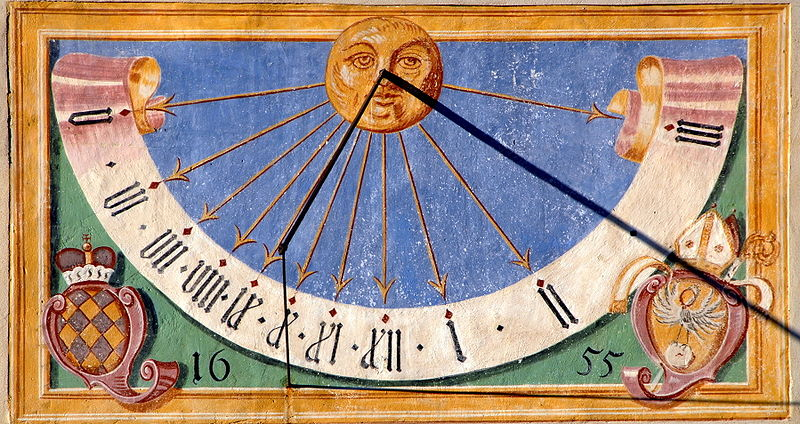

INDICE
La meridiana, detta anche, impropriamente, orologio solare o quadrante solare, è uno strumento di misurazione del tempo basato sul rilevamento della posizione del Sole.[1] In senso stretto, con meridiana si deve intendere unicamente l'indicatore del passaggio del Sole a mezzogiorno, anche se nella sua accezione più generale il termine viene utilizzato per indicare, erroneamente, gli orologi solari presenti sui muri degli edifici.[2]
Il termine "quadrante solare", che caratterizza 'non' le meridiane bensì gli orologi solari, trae la sua origine dal latino quadrans che indicava nel Rinascimento la quarta parte di cerchio sulla quale veniva generalmente tracciato un orologio solare portatile, denominato appunto quadrante. Tuttavia, il suo significato è stato generalizzato nel linguaggio popolare, in tempi moderni, divenendo sinonimo di meridiana[1] e orologio solare.[3]
A differenza dell'orologio solare, la meridiana indica ogni giorno, lungo una linea retta, l'istante in cui il Sole transita sul meridiano del luogo.
Gli orologi solari e le meridiane erano già conosciuti nell'antico Egitto e presso altre civiltà, e successivamente tra quella dei Greci e dei Romani. L'origine di questa scienza è tuttavia ancor più antica rispetto alla civiltà egizia e le prime testimonianze risalgono addirittura al Neolitico.
Lo studio degli orologi solari è chiamato gnomonica o, meno frequentemente, sciaterica.
Nella forma tradizionale l'orologio solare è uno stilo, detto gnomone, che proietta la sua ombra su una superficie orizzontale o verticale, detta quadrante, indicando l'ora solare locale. Il principio di funzionamento di un orologio solare è legato al moto apparente del Sole nel cielo di una data località.[4]
Mentre nella meridiana il Mezzogiorno locale è indicato sopra una linea retta, nell'orologio solare l'ora locale è definita in modo più esteso sopra un quadrante nel quale, l'angolo orario di tutte le ore è un multiplo di 15°. Questo orario differisce dall'orario dell'orologio che portiamo al polso perché quest'ultimo indica l'ora media in vigore nei vari paesi. I due orari sono differenti per altri motivi:
Il giorno solare, ovvero l'intervallo tra due transiti del Sole su uno stesso meridiano, dura in media ventiquattro ore. A causa della differente velocità di rivoluzione della Terra attorno al Sole e dell'obliquità dell'eclittica, la durata del giorno non è costante, cioè il giorno vero non dura mai ventiquattro ore come il giorno medio, ma è un po' più lungo o un po' più corto. Le differenze, sommandosi tra loro, generano un divario tra il tempo vero e il tempo medio che arriva a ±15/16 minuti, determinando la cosiddetta
L'ora media di ogni paese ha uno o più meridiani di riferimento. In Italia il meridiano di riferimento è quello di longitudine 15° Est rispetto a Greenwich. La differenza tra il transito del Sole sul meridiano centrale e quello del meridiano locale di longitudine L ha un valore costante di (15°-L)*4 minuti. Per confrontare un quadrante a ora vera locale con l'orologio, questa differenza va integrata con l'equazione del tempo.
Ad esempio, in un luogo avente longitudine 12° Est, nel 2015 la differenza massima tra l'orologio da polso e un quadrante a ora vera locale si verifica l'11 febbraio quando l'equazione del tempo, pari a 14m 11,5s, si somma alla differenza dovuta alla longitudine pari a: (15°-12°)*4min=12min, comportando uno scarto di 26m 11,5s.
In alcuni casi le linee orarie della meridiana, anziché indicare l'ora vera locale, indicano l'ora vera del fuso di riferimento. In questi quadranti, quando l'ombra segna le 12, il Sole transita sul meridiano centrale. Pertanto per confrontare l'ora indicata da queste meridiane con quella di un orologio da polso è sufficiente apportare solo la correzione dell'equazione del tempo.
Una meridiana verticale a ora vera locale si riconosce rispetto a una a ora vera del fuso osservando la linea del mezzogiorno, perfettamente verticale nel primo caso, leggermente ruotata nel secondo.
Su molti orologi solari, le differenze tra l'ora del quadrante e quella media dell'orologio da polso sono riprodotte in una tabella, oppure sono sintetizzati in un grafico. In alcuni casi nel quadrante è tracciato l'analemma (o lemniscata), ossia la curva a forma di 'otto' che indica l'ora media del fuso e permette di leggere direttamente l'ora dell'orologio senza ricorrere alla correzione dell'equazione del tempo e della differenza di longitudine.[5]
Lo gnomone di un quadrante può essere di diversi tipi, per esempio: ortostilo, stilo polare, a camera oscura, bifilare, a riflessione.
Nei quadranti verticali gli gnomoni più usati sono l'ortostilo e lo stilo polare. L'ortostilo è piantato ortogonale alla parete e indica l'ora con la punta dello gnomone. Lo stilo polare è invece posizionato in modo da risultare parallelo all'asse di rotazione terrestre, quindi punta il polo celeste e la sua ombra coincide con la linea oraria in tutta la sua lunghezza.
La più semplice forma di orologio solare è costituita da un disco coassiale con una barra collocata parallelamente all'asse terrestre. Il disco forma un piano parallelo con l'equatore. Sul disco sono tracciati dei segni che indicano il trascorrere delle ore. Normalmente il mezzogiorno è collocato nella parte più bassa del disco, le 6 al bordo ovest e le 18 al bordo est. In estate la parte nord del disco è illuminata mentre la parte sud non lo è. In inverno è illuminata la parte sud e non la nord. In estate il nodo è l'estremità a nord dello gnomone, in inverno lo diventa l'estremità sul lato opposto del disco.
Sul disco possono essere tracciati una serie di cerchi concentrici per evidenziare la posizione del nodo ogni giorno, permettendo di usare l'orologio come calendario. Uno svantaggio di questa soluzione è che agli equinozi i raggi solari giungono parallelamente al disco e lo strumento è difficilmente leggibile.
L'orologio solare da giardino si basa sullo stesso principio della precedente, ma le linee del disco sono proiettate per mezzo della trigonometria su un piano parallelo al suolo.[6][7] Il principale vantaggio di questo sistema è di potere mostrare l'ora tutto l'anno, poiché il quadrante non è mai completamente in ombra. I numeri sono in senso orario nell'emisfero settentrionale e in senso antiorario nell'emisfero meridionale. Il quadrante può essere tracciato sulla pavimentazione di una piazza oppure su un disco di vetro traslucido visibile dal basso.
L'inclinazione dello gnomone rispetto al quadrante è pari alla misura in gradi della latitudine del posto in cui ci troviamo. Lo strumento ovviamente deve essere orientato, cioè occorre ruotare il quadrante in modo che lo gnomone sia parallelo all'asse terrestre.
Sebbene oggigiorno siano una rarità, un tempo gli orologi solari tracciati sulle pareti esterne degli edifici esposte a sud erano comuni (o quadrante rivolto a nord nell'emisfero sud), poiché visibili a distanza ed economici da realizzare. Il quadrante era semplicemente dipinto sul muro oppure ricavato su una lastra di marmo o pietra. Lo gnomone era uno stilo di ferro o di ottone, oppure un tripode di metallo, per maggiore robustezza.
Principale svantaggio di questi strumenti è che sono in grado di mostrare l'ora solamente per il periodo dell'anno e del giorno in cui il muro è direttamente illuminato dal sole.
L'inclinazione dello gnomone è uguale alla latitudine.
Tradizionalmente si usava collocare quattro orologi sul tetto o sulle pareti perimetrali di una torre, in modo da avere l'indicazione per tutto l'anno. È abitudine incidere sul quadrante un motto.